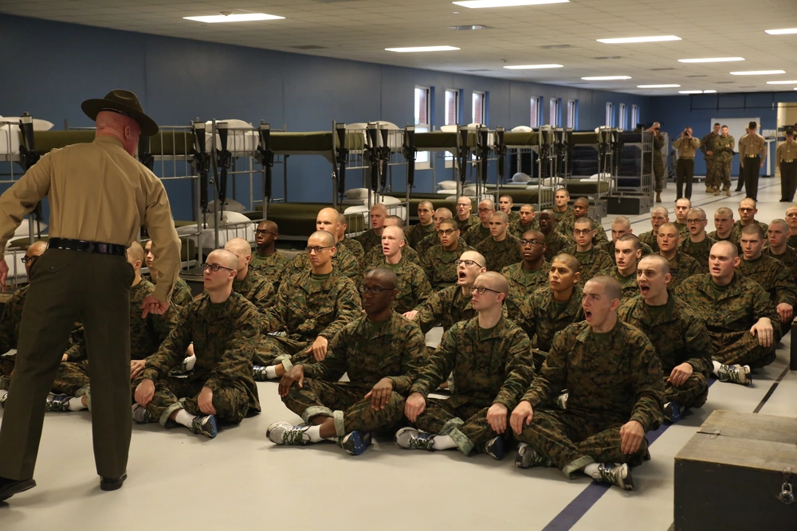
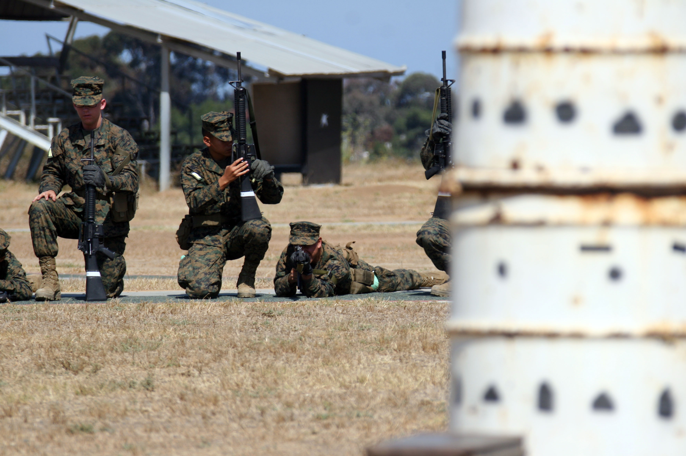
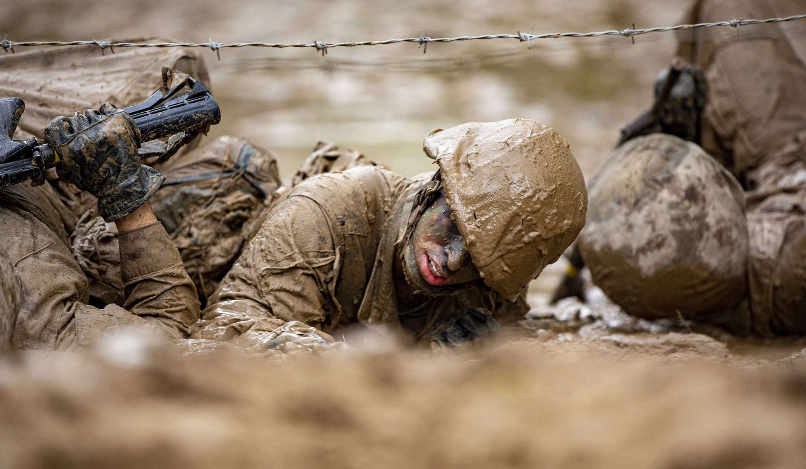

The Marine Corps changes from time to time. I arrived in Parris Island in Haloween 2010. Normally you get a period that allows you to learn what to expect, and Poolies (potential recruits) all run around Downtown Columbia to get into shape. My process took 2 weeks. One week of that I had to live in my car because one guy backed out, and they told me I was leaving. So, I quit my job and moved my things out of my apartment. With my luck, the guy changed his mind, and got his spot back. I finally left from Ft Jacksons, MEPS station, and arrived. Your first encounter is an angry Drill instructor gets on the bus and does a whole lot of yelling. they guide you to the famous yellow footprints. Where you spend the next 2 days getting and carrying around all of your gear that you will need for the next 3 months. 2 Sea Backs full, and your ruck sack. You have to carry it all to your barracks, which can be as far away as 500 yrds away. Then you get to sit and wait. Boot camp is broken Down into 3 phases.
|  |  |  |
| Phase One: | Phase Two: | Phase Three: |
| This is the first 4 weeks. This phase is Recieving, PT, Introduction in to to lose-quarters drill, and introduction introduction Marine Corps martial arts program. They introduce you to the sandpit, where they teach you discipline. Im sure you can imagine what happens there. | This is the 2nd 4 weeks. You begin your PT test which requires 3 mile run/30 minutes with goal of 18, sit ups, and pull ups. Grass week you sit stand around a barrel and hold a shooting postion for a long period of time. After 3 weeks of Grass week. you spend the last week of phase two at the range. There are no drill instructors there, and you get put with a shooting coach. There you qualify with your rifle. | This phase is the toughest phase. This phase is all physical. This is where you are tested. Marines are required to take a physical fitness test, AND and combat fitness test every year. Normally they are split up. January you would do you PFT. June CFT. Here, you run them in consecutive days. You do your Final Drill, and get graded by your company. Worst of all, you start the Crucible. The Cruicible is 54 hours of sleep, and food deprivation with a total of 45 miles of hiking. |
| Annual Qualifications | ||
| Rifle Range | PFT | CFT |
| This is a yearly qualification that comes in 2 tables. Table one exercises consist of 100, 300, and 500 yards. 100 and 300 yards you shoot from prone, kneeling and standing. 300 also shoots from the seated position. 500 yards you shoot from prone There are 3 awards. Expert, Sharpshooter, and what we call pizza box. | The PFT stands for physical fitness test. You are required to run 3 miles in less than 24 minutes. You will do a minimum of 25 sit ups, and a minimum of 3 pull ups. There is 1st, 2nd, and 3rd class scores. If you dont score a 1st class, you are automatically disqualified as a canidate for meritorious promotion. If you fail, you have to repeat. If you are unable to pass, then you get seperated from the military if conditions other than honorable. | The CFT stands for combat fitness test. your sprint 300 meters in boots, lift ammo cans over your heada minimum of 10 times. Then you do the movement under fire. its a 25 yard low crawl, 25 yard high crawl, zig zag sprint 25 yards, buddy drag a parter back 25 yards where you zig zag sprint, Firemans carry your partner for 10 yards. Drop him, toss a dummy grenade inside a circle. pick him up, and firemans carry him back to the start. pick up 2 large ammo cans and sprint 100 yards. A good score would be 2 minutes and 30 seconds. |
Once you finish Bootcamp, you go to your Occupational school. Your occupational schools vary from job to job. It can last a month, to a year. Infantry is fairly short, but you spend majority of the time in the fleet training. Most units will have PT in the morning, then go into a predetermined daily plan. You get told when to sleep, where to sleep, when to talk, and when to run. Training is none stop. With my experience in the Fleet, we went straight predeployment training which lasted a month, went back to Camp Lejeune, and deployed to Afhanistan a week later. It was a rotation of 6 months and a month off throughout. You will either deploy on a MEU, which is on a navy ship, and visit places all over world. But that is if you are lucky. I went American Airlines with bag and rifle in my lap. 12 hour flight, to Germany and another few hours to Camp Manas in Kyrgyzstan. It was -10 degrees because it was in the Himalayas. When separating, you go through mandatory Transitional training, where you learn minimal amount about how to use your GI Bill and get a job, while dealing with Stress that most people don't understand.